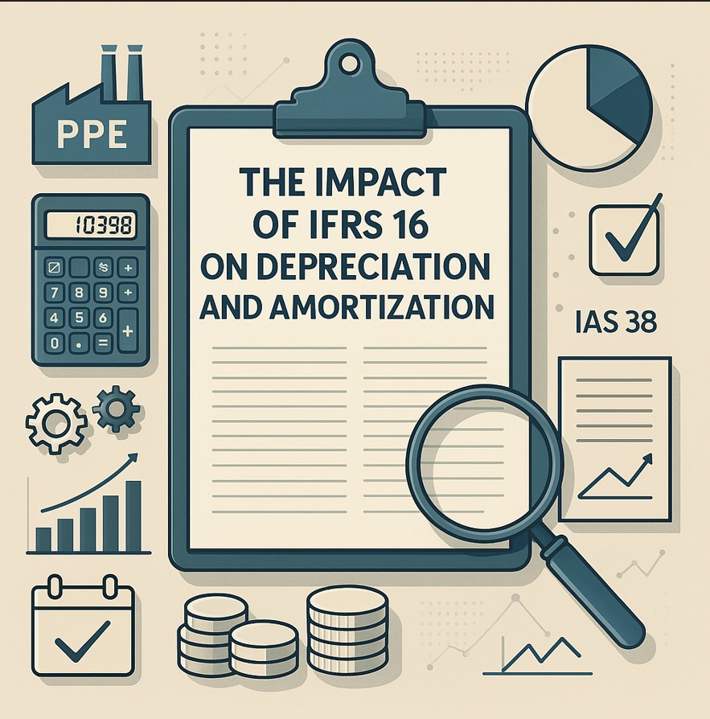

The Impact of IFRS 16 on Depreciation and Amortization
Wanna save your money? Understanding the intricacies of IFRS 16 can help businesses navigate asset management more effectively.
While it primarily affects the depreciation of property, plant, and equipment (PPE), the standard also has indirect effects on amortization practices for intangible assets. Let’s dive deeper into how IFRS 16 alters these accounting processes and what that means for financial reporting.
The implementation of IFRS 16 transforms how companies handle leased assets, requiring them to recognize right-of-use assets on the balance sheet and adjust depreciation accordingly. This change enhances transparency and ensures more accurate financial reporting. While it aligns businesses with international standards, it also introduces complexities in asset management and tax planning that need to be navigated carefully.
Introduction to IFRS 16
IFRS 16 – Leases is an international accounting standard that provides guidelines on how to account for leases, but it also significantly influences the recognition and measurement of tangible and intangible assets. Under IFRS 16, lease accounting has undergone a significant transformation, and it affects how companies handle depreciation of right-of-use assets in a lease agreement.
It replaces IAS 17, which previously treated leases differently based on whether they were classified as finance leases or operating leases. The key change under IFRS 16 is that nearly all leases now appear on the balance sheet, leading to the capitalization of leased assets as right-of-use assets and corresponding lease liabilities. This significantly impacts the way depreciation is calculated and amortized.
How IFRS 16 Affects Depreciation
Depreciation under IFRS 16 applies primarily to right-of-use assets that a lessee recognizes on their balance sheet. These right-of-use assets are depreciated over the lease term or the asset’s useful life, whichever is shorter. Below are the key areas in which IFRS 16 impacts depreciation:
1. Depreciation Method for Right-of-Use Assets
Under IFRS 16, lessees must apply a straight-line depreciation method for right-of-use assets, unless another method better reflects the pattern of consumption of the asset’s future economic benefits. Typically, straight-line depreciation is applied to spread the cost evenly over the lease term, unless a different pattern of use is expected.
2. Componentization of Leased Assets
As with tangible assets under IAS 16, IFRS 16 requires that leased assets be treated in their components if the parts of the asset have different useful lives. This is particularly important for leased machinery or vehicles where the individual components may wear out at different rates, requiring separate depreciation calculations for each component.
3. Impact of Revaluation and Lease Modifications
Under IFRS 16, if there are modifications to a lease or a revaluation of the asset, the depreciation may change. For example, if a lease term is extended or reduced, the depreciation schedule must be adjusted to reflect the new useful life or lease term. Any changes in lease payments or asset value adjustments due to revaluation would also require corresponding adjustments in depreciation.
4. Depreciation for Leased Land and Buildings
Under IFRS 16, when a lease involves land and buildings, companies must split the lease into two components: the land and the building. Typically, land is not depreciated because it has an indefinite useful life, while the building is depreciated over its useful life. This distinction ensures that the depreciation of the right-of-use asset aligns more closely with the underlying asset's nature.
5. Tax Implications of Depreciation
The capitalized right-of-use asset and the associated lease liability result in changes to the company’s balance sheet. Depreciation of the right-of-use asset will be included in the operating expenses, and interest on the lease liability will be included in the financial expenses. This could affect the company’s tax position, especially in jurisdictions where tax laws are based on accounting depreciation.
Amortization Under IFRS 16 and IAS 38
While IFRS 16 deals primarily with the depreciation of tangible assets (right-of-use assets), IAS 38 governs the amortization of intangible assets. It’s essential to note that IFRS 16 affects the accounting treatment for leases, but IAS 38 still applies to intangible assets like patents, software, trademarks, and goodwill.
Amortization of Intangible Assets
Amortization under IAS 38 is the systematic allocation of the cost of intangible assets over their useful lives, generally applying the straight-line method. This process is similar to depreciation in its goal of reflecting the consumption of an asset’s economic benefits over time.
Impact of IFRS 16 on Amortization of Intangible Assets
The change under IFRS 16 mainly affects the treatment of leased assets, particularly right-of-use assets. However, if a business holds intangible assets in conjunction with right-of-use leased assets, it must apply the appropriate amortization principles under IAS 38 to these assets. For example, a business leasing software for a long-term period would amortize the software over its useful life, independent of the right-of-use asset treatment under IFRS 16.
Key Takeaways
- Right-of-Use Assets and Depreciation: IFRS 16 mandates the recognition of right-of-use assets for most leases, which must be depreciated over the shorter of the lease term or the asset's useful life.
- Component Accounting: Similar to tangible assets under IAS 16, IFRS 16 requires a component approach for leased assets if the individual components have different useful lives.
- Revaluation and Lease Modifications: Depreciation is adjusted when there are changes in lease terms or when the right-of-use asset is revalued or impaired. This ensures that the depreciation reflects the new value and the asset’s expected future use.
- Tax Planning: The capitalized right-of-use assets and related lease liabilities may have tax implications for businesses, particularly in jurisdictions with tax depreciation based on financial reporting.
- Leasing and Asset Capitalization: One of the most significant changes under IFRS 16 is the capitalization of leases as right-of-use assets, which changes the way businesses calculate depreciation for leased assets.
- Disclosure Requirements: IFRS 16 requires enhanced disclosures related to leased assets, including the depreciation methods used, the lease term, and any revaluations or impairments to right-of-use assets. This enhances transparency for investors and stakeholders.
Strategic Benefits and Challenges of IFRS 16 Compliance
Benefits for Businesses
- Enhanced Transparency: By requiring the recognition of leased assets on the balance sheet, IFRS 16 offers greater transparency regarding a company's lease obligations and the impact on its financial position.
- Improved Asset Management: Depreciation of leased assets over time ensures businesses are accounting for the wear and tear of leased items, helping management make better decisions on asset replacement or further investments.
- Alignment with Global Standards: By adopting IFRS 16, businesses align with global accounting practices, making it easier to compare financial performance with international peers.
- Better Cash Flow Management: Understanding depreciation and lease obligations helps businesses better manage their cash flows, especially when dealing with long-term lease agreements.
Challenges for Businesses
- Complex Implementation: The new rules under IFRS 16 can be complex, especially for businesses with numerous lease agreements. Implementing these standards might require significant adjustments to financial systems and internal controls.
- Increased Costs: The need to capitalize leases and recognize right-of-use assets on the balance sheet may increase administrative costs due to the need for more detailed reporting and compliance.
- Impact on Financial Ratios: The capitalization of leases may impact key financial ratios, such as debt-to-equity or return on assets, which investors often scrutinize. This change could affect investor perception, particularly for companies with large lease portfolios.
Conclusion
IFRS 16 significantly impacts the depreciation and amortization processes of businesses, particularly with the recognition of right-of-use assets. From introducing componentization to changing the way leases are treated on the balance sheet, IFRS 16 requires businesses to adopt more precise accounting practices. These changes lead to more accurate and transparent financial reporting, offering both opportunities for tax planning and challenges in implementation.
For companies with extensive lease portfolios or complex asset structures, staying compliant with IFRS 16 is essential. By understanding the nuances of depreciation and amortization under this standard, businesses can optimize their financial statements, manage their lease liabilities better, and improve decision-making.
How does IFRS 16 impact the depreciation and amortization of leased and tangible assets?